1. Perfil del dataset
Variables: species, island, bill_length_mm, bill_depth_mm, flipper_length_mm,
body_mass_g, sex
Memoria: 67,547 bytes
2. Esquema inferido
| Variable |
Tipo |
Rol |
Únicos |
Valores de muestra |
| species |
str |
categórica baja card. |
3 |
Adelie, Chinstrap, Gentoo |
| island |
str |
categórica baja card. |
3 |
Torgersen, Biscoe, Dream |
| bill_length_mm |
float64 |
numérica |
164 |
39.1, 39.5, 40.3 |
| bill_depth_mm |
float64 |
numérica |
80 |
18.7, 17.4, 18.0 |
| flipper_length_mm |
float64 |
numérica |
55 |
181, 186, 195 |
| body_mass_g |
float64 |
numérica |
94 |
3750, 3800, 3250 |
| sex |
str |
categórica baja card. |
2 |
Male, Female |
3. Valores faltantes
| Variable |
Faltantes |
Porcentaje |
Estado |
| species |
0 |
0.00% |
Completa |
| island |
0 |
0.00% |
Completa |
| bill_length_mm |
2 |
0.58% |
Faltantes |
| bill_depth_mm |
2 |
0.58% |
Faltantes |
| flipper_length_mm |
2 |
0.58% |
Faltantes |
| body_mass_g |
2 |
0.58% |
Faltantes |
| sex |
11 |
3.20% |
Faltantes |
4. Resumen de variables numéricas
| Variable |
Media |
Mediana |
Desv. Est. |
Min |
Q1 |
Q3 |
Max |
IQR |
| bill_length_mm |
43.92 |
44.45 |
5.46 |
32.10 |
39.23 |
48.50 |
59.60 |
9.28 |
| bill_depth_mm |
17.15 |
17.30 |
1.97 |
13.10 |
15.60 |
18.70 |
21.50 |
3.10 |
| flipper_length_mm |
200.92 |
197.00 |
14.06 |
172.00 |
190.00 |
213.00 |
231.00 |
23.00 |
| body_mass_g |
4201.75 |
4050.00 |
801.95 |
2700.00 |
3550.00 |
4750.00 |
6300.00 |
1200.00 |
5. Resumen de variables categóricas
species
| Adelie |
152 |
44.19% |
| Gentoo |
124 |
36.05% |
| Chinstrap |
68 |
19.77% |
island
| Biscoe |
168 |
48.84% |
| Dream |
124 |
36.05% |
| Torgersen |
52 |
15.12% |
sex
| Male |
168 |
48.84% |
| Female |
165 |
47.97% |
| NaN |
11 |
3.20% |
6. Tablas cruzadas
species × island
|
Biscoe |
Dream |
Torgersen |
| Adelie |
44 |
56 |
52 |
| Chinstrap |
0 |
68 |
0 |
| Gentoo |
124 |
0 |
0 |
species × sex
|
Female |
Male |
| Adelie |
73 |
73 |
| Chinstrap |
34 |
34 |
| Gentoo |
58 |
61 |
island × sex
|
Female |
Male |
| Biscoe |
80 |
83 |
| Dream |
61 |
62 |
| Torgersen |
24 |
23 |
7. Matrices de correlación
Pearson
|
bill_len |
bill_dep |
flipper |
mass |
| bill_length_mm |
1.000 |
−0.235 |
0.656 |
0.595 |
| bill_depth_mm |
−0.235 |
1.000 |
−0.584 |
−0.472 |
| flipper_length_mm |
0.656 |
−0.584 |
1.000 |
0.871 |
| body_mass_g |
0.595 |
−0.472 |
0.871 |
1.000 |
Spearman
|
bill_len |
bill_dep |
flipper |
mass |
| bill_length_mm |
1.000 |
−0.222 |
0.673 |
0.584 |
| bill_depth_mm |
−0.222 |
1.000 |
−0.523 |
−0.432 |
| flipper_length_mm |
0.673 |
−0.523 |
1.000 |
0.840 |
| body_mass_g |
0.584 |
−0.432 |
0.840 |
1.000 |
8. Gráficos exploratorios
Conteos
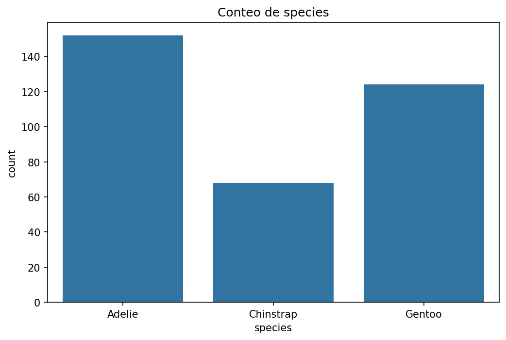
Conteo de species
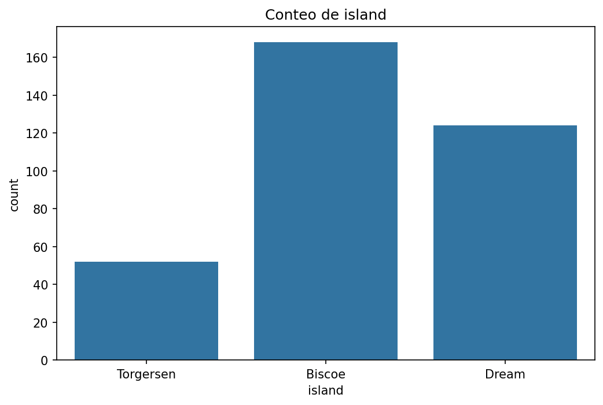
Conteo de island
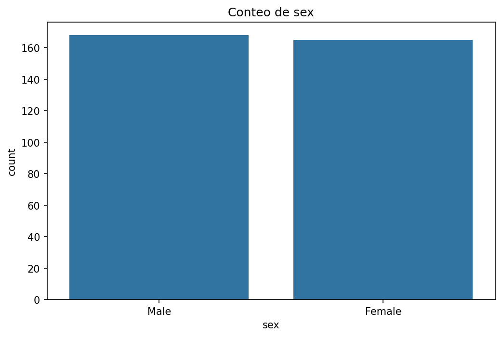
Conteo de sex
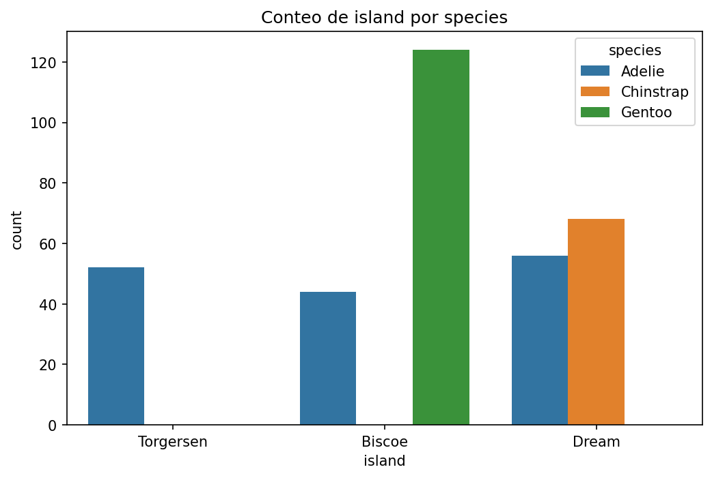
Conteo de island por species
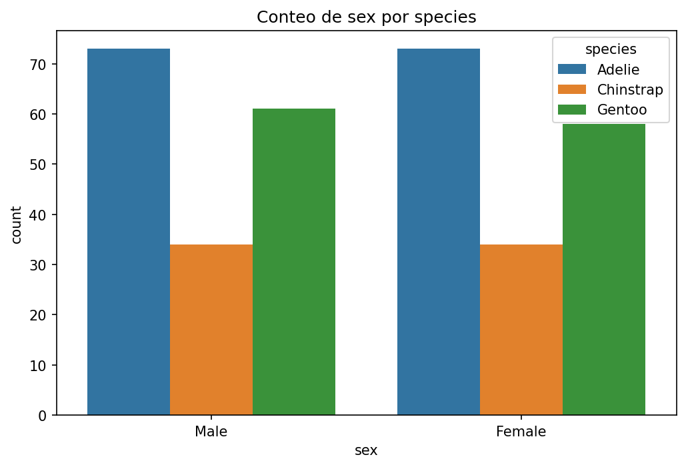
Conteo de sex por species
Histogramas
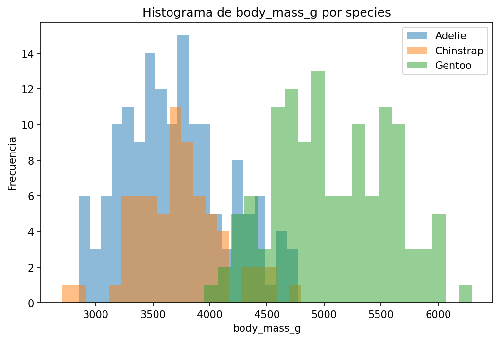
body_mass_g por species
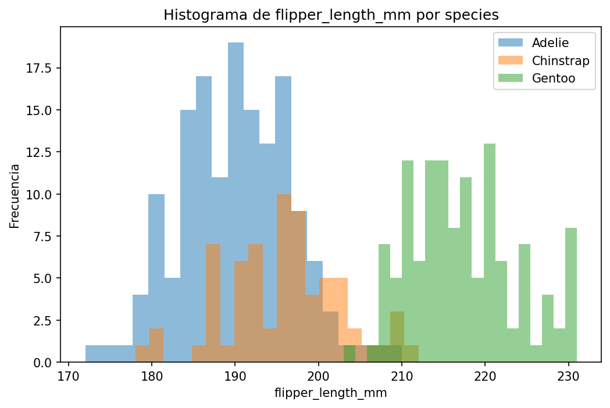
flipper_length_mm por species
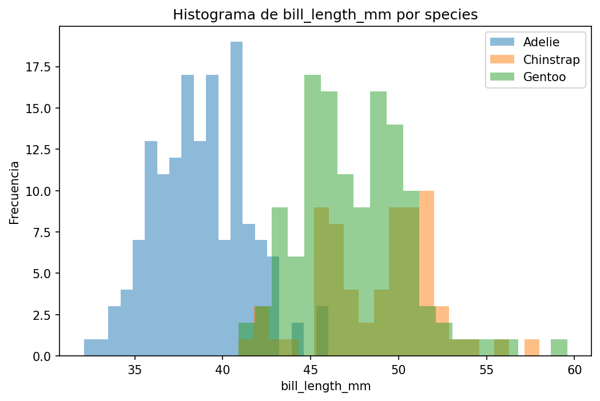
bill_length_mm por species
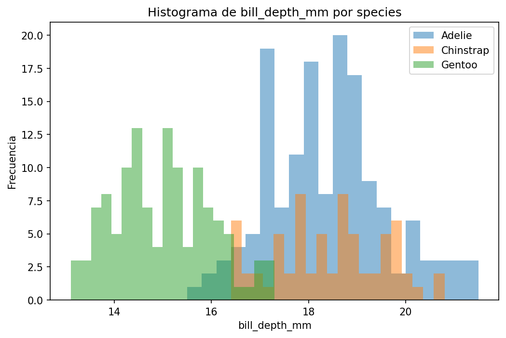
bill_depth_mm por species
Boxplots
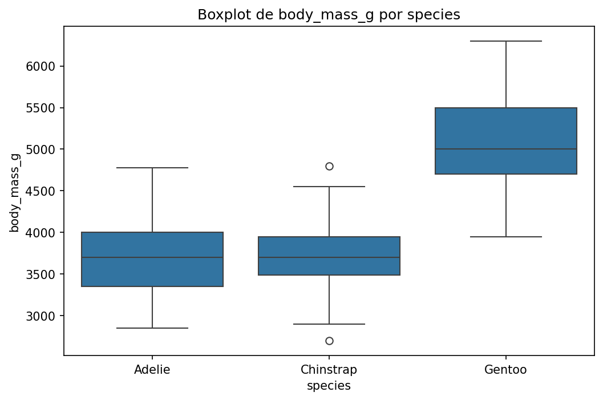
body_mass_g por species
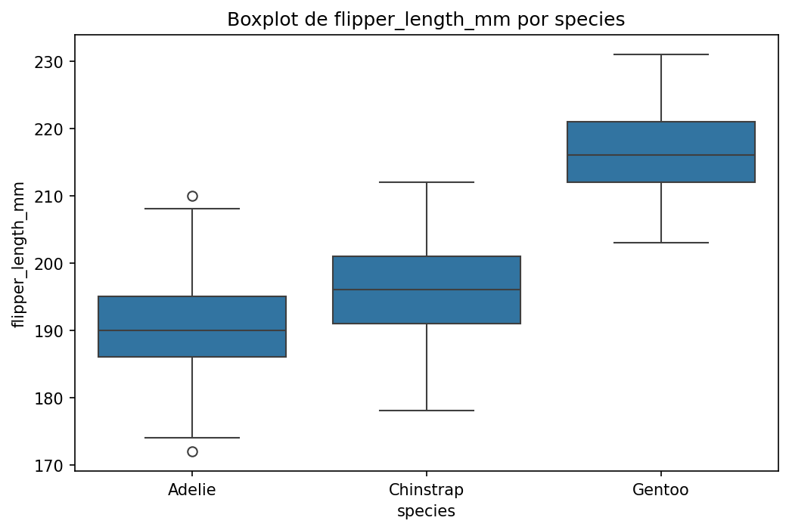
flipper_length_mm por species
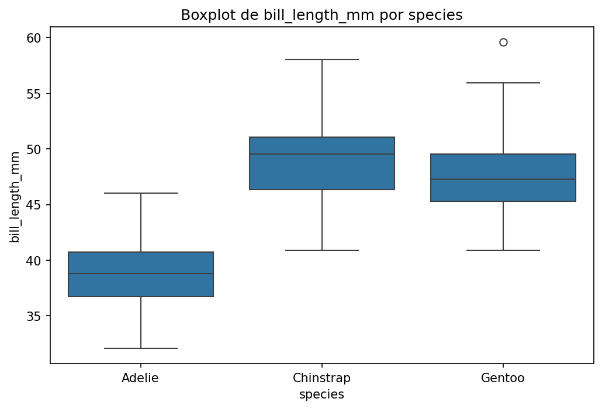
bill_length_mm por species
Scatter
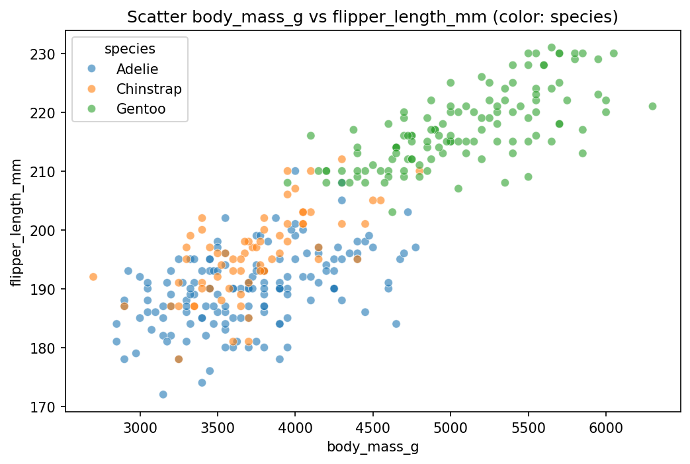
body_mass_g vs flipper_length_mm (por species)
Heatmaps de correlación
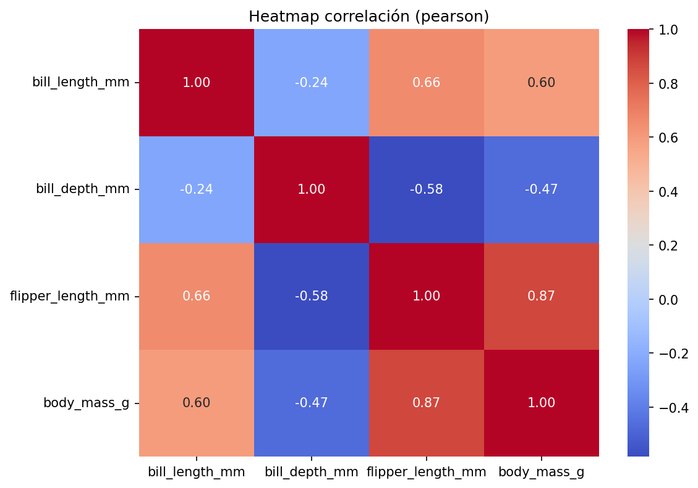
Correlación Pearson
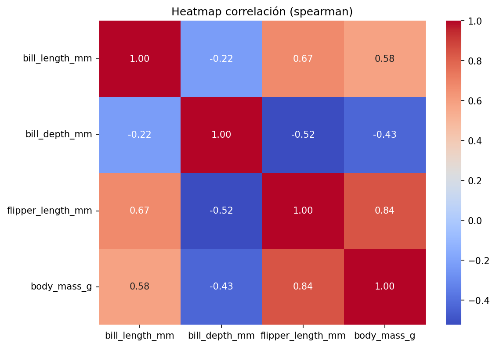
Correlación Spearman
9. Hipótesis
H1: flipper_length_mm se asocia positivamente con body_mass_g
Tests sugeridos: pearson_correlation, spearman_correlation
Evidencia: 04_descriptive_stats.json:correlations.pearson ·
05_visual_registry.json:scatter
H2: bill_length_mm difiere significativamente entre species
Tests sugeridos: kruskal_wallis, one_way_anova
Evidencia: 04_descriptive_stats.json:numeric_summary ·
05_visual_registry.json:box_bill_length_mm
H3: La distribución de species se asocia con island
Tests sugeridos: chi_squared
Evidencia: 04_descriptive_stats.json:crosstabs ·
05_visual_registry.json:count_island_by_species
H4: body_mass_g difiere entre sexos (Male vs Female)
Tests sugeridos: mann_whitney_u, t_test_independent
Evidencia: 04_descriptive_stats.json:numeric_summary · categorical_summary.sex
10. Pruebas estadísticas
| Hipótesis |
Prueba |
Estadístico |
p-valor |
Resultado |
| H1 |
Pearson |
0.8712 |
4.37 × 10−107 |
Apoya |
| H1 |
Spearman |
0.8400 |
2.76 × 10−92 |
Apoya |
| H2 |
Kruskal-Wallis |
244.14 |
9.69 × 10−54 |
Apoya |
| H3 |
Chi-cuadrado (dof=4) |
299.55 |
1.35 × 10−63 |
Apoya |
| H4 |
Mann-Whitney U |
20845.50 |
1.81 × 10−15 |
Apoya |
Nivel de significancia α = 0.05. Las 4 hipótesis se apoyan con evidencia estadística muy fuerte
(todos p < 10−15).
11. Conclusiones
A) Hallazgos descriptivos
El dataset contiene 344 observaciones de 3 especies de pingüinos con 7 variables.
Refs: 00_raw_profile.json:profile.n_rows, profile.n_cols
Existen valores faltantes concentrados en sex (11, 3.2%) y variables de medición corporal (2 cada
una, 0.58%).
Refs: 00_raw_profile.json:missing
Las variables numéricas presentan rangos y dispersiones diferentes según especie; body_mass_g tiene
la mayor varianza.
Refs: 04_descriptive_stats.json:numeric_summary
B) Patrones visuales
Los histogramas de bill_length_mm muestran distribuciones diferenciadas por especie, con Adelie
presentando picos más bajos.
Refs: 05_visual_registry.json:hist_bill_length_mm_by_species
El scatter de body_mass_g vs flipper_length_mm muestra agrupaciones por especie con tendencia lineal
positiva.
Refs: 05_visual_registry.json:scatter_body_mass_g_vs_flipper_length_mm_hue_species
C) Próximas hipótesis
- Explorar si bill_depth_mm también difiere por species controlando por sex.
- Analizar si la relación flipper_length — body_mass varía por island.
12. Preguntas para el investigador
- ¿Cómo deben tratarse los valores faltantes en sex? ¿Eliminar filas o imputar?
- ¿Se debería controlar el análisis por species al comparar sexos?
- ¿Existe un factor temporal (año) que pueda afectar las mediciones?